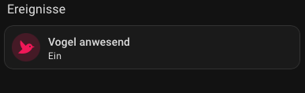
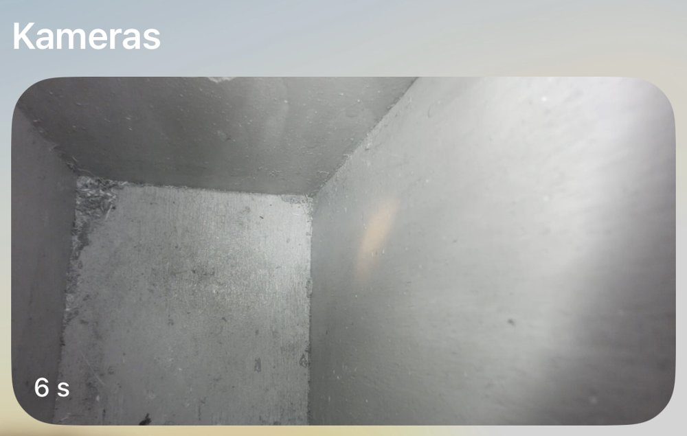

Home Assistant
The script talks to Home Assistant through a webhook. Home Assistant turns the messages into a push notification and a dashboard tile.
1. A switch for "bird present"
Settings → Devices & services → Helpers → create a Toggle named "Bird present". That gives input_boolean.bird_present.
2. The automation
Trigger: Webhook with a long random ID, allowed method POST only, local only switched on. Then a "choose" on the message:
Message (trigger.json.state) | Action |
|---|---|
motion | Push notification to the phone ("Movement in the nest box") |
occupied | Turn input_boolean.bird_present on |
empty | Turn input_boolean.bird_present off |
Test without a bird, from the Pi:
curl -s -o /dev/null -w "%{http_code}\n" -X POST -H "Content-Type: application/json" \
-d '{"state":"motion"}' http://<home-assistant>:8123/api/webhook/<secret-id>Expected: 200. The automation's Traces show what arrived.
3. The dashboard tile
A tile card for input_boolean.bird_present, name "Bird present", bird icon, with a visibility condition "state is on". The tile appears only while somebody is in the box.

4. Push notifications
Install the Home Assistant companion app on the phone. A focus mode such as "Sleep" silences the push; allow the Home Assistant app in that focus if you want notifications at night.
5. Live picture on iPhone and Apple TV
The route is: Pi stream → Home Assistant camera → HomeKit → Home app. Everything stays in the home network, iCloud recording is off. The picture has no sound and a delay of a few seconds.
- Camera in Home Assistant: add the Generic Camera integration with stream source
rtsp://<pi-address>:8554/nestbox, RTSP transporttcp, name "Nest box". - HomeKit bridge: add the HomeKit Bridge integration and tick only the Camera domain. Home Assistant then creates a separate accessory-mode entry that holds just the camera.
- Pair: open the "HomeKit Pairing" notification in Home Assistant, then in the Home app tap + → Add Accessory, scan the QR code and accept the "uncertified accessory" warning.
- Apple TV: Home app → Cameras → Nest box.

If the picture hangs, check the stream first (systemctl is-active mediamtx), then close and reopen the Home app on the Apple TV.